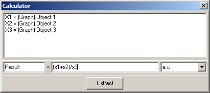

|
描述
该计算器可用于通过输入自定义公式来转换或组合图像或图谱对象的值。图像或（多维）图谱对象的每个单浮点值都使用此公式进行转换。
另请参阅
输入与结果
输入：
您可以在此对话框中使用单个图谱或图像对象，或组合多个输入数据对象以创建新的数据对象。
允许以下组合：
结果：
根据输入数据的维度，结果数据对象可以是图像、单图谱、线图谱或图像图谱。如果放置了具有不同维度的图谱对象，结果将是具有最大维度输入图谱的维度的图谱。
用户界面

对象列表视图：
此列表显示输入数据对象。每个对象定义一个变量（x1, x2, ...）。这些变量可以在公式中使用。
结果（字符串编辑框）：
输入新数据对象的标题/名称（公式字符串将附加到此标题）。
"(x1+x2)/x3"（字符串编辑框）：
可在此处输入所需的公式（请参阅公式编辑器了解可能的操作符、函数和示例）。
"a.u."（字符串编辑框 + 预选）：
输入结果的所需单位或选择其中一个预定义名称（a.u. = 任意单位）。
提取（按钮）：
按下该按钮将开始计算/转换。
预览窗口
如果仅使用图像数据对象，则有一个预览图像查看器窗口显示结果图像。如果输入数据列表中至少有一个图谱对象，则有一个预览图谱查看器显示结果图谱。如果是多维输入图谱（例如图像图谱），对话框将监听相应的光标并显示相应的预览图谱。